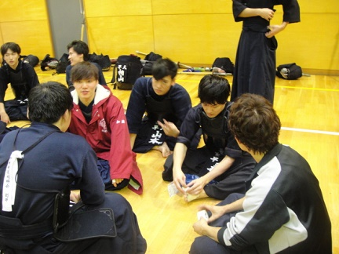
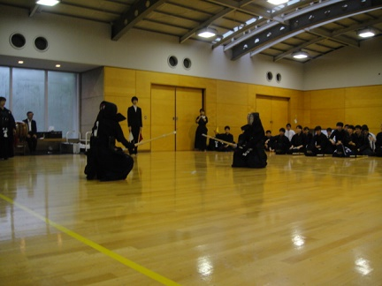
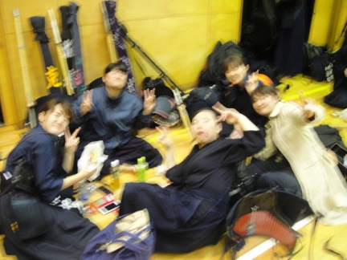
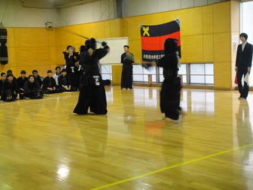
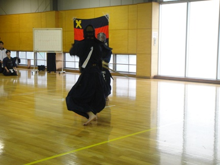
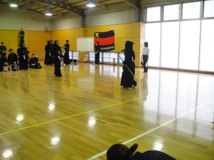
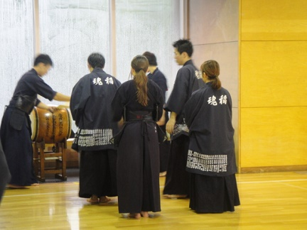
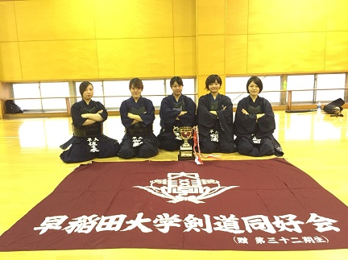

|
10/22、慶應義塾大学矢上キャンパスにて後期早慶戦が行われました。 その様子をお伝えします まずは清田（５４） スタバとかではなくマックのコーヒーっていうのが彼らしいですね。 右目が充血して半喰種になった梶浦（５６） かわいそうに・・・。 あれ？なんか学院生がいますね？ 
マスク率の高い１女。おはよ～！ 
髪型やら服の色からシンメトリー感を出す大石（５５）と柴田（５５） 相変わらず集合場所でご飯を食べる阿部（５４）と永安（５４） 真っ青なコートに包まれて登場した渡邊（５５） 良い色！ さて雨の中体育館までやってきました。 太田先輩・・・？何してるんですか？？ ベストを久しぶりに見た気がします 午前中に女子２軍まで試合をやるので、アップの準備 台風の中来て下さった中山先輩と藤本先輩 なんかラッパーみたいなポーズしてます いつ見ても柴田（５５）は安定感ありますね 柏山（５５）おはよう なんでこの距離で後ろにピントが合うのか・・・ さてアップ開始です。 森（５５）が仕切ってました 男女揃ってやりました 雨だから若干ふわふわヘアーな大竹（５４） 開会式です。一旦優勝杯を返還します。一旦ね？ 今回は藤本先輩が審判長です 我が主将による選手宣誓！ 集合です さっきの学院生は佐野倉（５６）でした 遠くからアップで撮っても肌綺麗な前田（５４） 慶應の集合、盛り上がってますね！ 太田先輩いつもいらっしゃる安定感あります みんな真面目に聞いてる・・・よね？ 円陣です。やっぱり照れが捨てきれない阿部主将。 大橋先輩って上手かったんだなぁ・・・ ２度もピン写の取り直しを強いる拓海（５５） （正直どっち（で）も良いと思うんですけどね） ４軍の先鋒・次鋒 戸井田（５５）は久しぶりの試合、頑張って！ 大石（５５）に着けてもらえたら頑張れるね！ 応援に来てくれた勝間田（５４） ビデオの準備をする杉浦（５４）  ほんとよく目線くれるな サイズ的に隠れきれない竹内（５５） これはどういうアピールなんだろう 
菊地（５６）相変わらず可愛い。 それでは男子４軍戦です！ 先鋒は安藤（５４） 
良い調子です。 最初から激しいですね 後ろでスタンバッてる女子３軍の１女達 落合（５６）名誉挽回 
大将は渡邊（５５）です！ ４軍戦勝利です！幸先の良いスタート！ 円陣を組む女子３軍チーム。ファイト！ ここで大石（５５）が副審に みんな元気に試合やってます。 大将は加藤（５６）です 女子３軍終了！お疲れ様！ 一旦集合してオーダー発表です 雨凄いですね・・・ ここから人を摘まむシリーズ 鈴木（５４）にカメラを渡したらこんなことに・・・ 八塚（５５） この胴は藤浦（５６） これは三上（５５）かな・・・？ 今回３軍副将を任された森（５５） 藤浦（５６）大好きだな 二本勝ちした落合（５６）大活躍でしたね！ さて２軍戦開始です みんなで応援 この胴は藤浦（５６）！ 面を着けて待機してる城北師弟 ここで佐野倉（５６）は学院の早慶戦へ 忙しい中応援ありがとう！ 
この身長は怜（５５） 試合場狭かったですね 梶浦（５６）がきっちり清算してきました。 森（５５）３軍戦とか久しぶりでは ・・・？ 大将は西川（５５）！ ３軍戦終了です！まさかの本数負け 続いて女子２軍です！  前がフレッシュ１女、後ろが３女となっております。 野崎（５４）ファイト！！ 大将武田（５４）が一本勝ち！！ 女子２軍勝利です！これで午前は終了 集合です よく見ると下向いたり右向いたり上向いたり みんな何見てるんだか 主将による総評 指の付け根が見えてなければ載せられます さてランチタイム 真っ先に試合の反省を聞きに行く武田（５４）偉すぎる 永安（５４）ありがとう  ブレても可愛い１女 変顔してる子がいるのでブレて正解な気がします ２女の可愛さはブレないですね 安藤（５４）と羽織を着れてご満悦な佐々木（５６） 個人的にほっこりする１枚です さて午後試合に出る人たちはアップ みんなしてスマホみて現代っ子ですね いよいよ午後開始です！ 今回（も）１軍先鋒の大竹（５４）と 大将の西川（５５）です！ 大熊（５６）メガネ取ると結構印象変わりますね そういえば落合（５６）前髪切ってパーマかけたそうな。 最初は男子２軍戦から 
カメラマン松川（５６） 西川（５５）はパーカー派  相手にも上段が 真剣な清田（５４） 今回青木（５４）は副将です 
今日も社長は安定してます １軍女子もそろそろ準備 ２軍戦も終盤です  ん？ 男子２軍戦終了です！ 集合挟んでからの 女子１軍戦です！ THE先鋒戦っていう感じです 一本取って来ました！大事な１本 続いて次鋒竹内（５５） 
中堅に栗原（５６） 身長差ありますね  副将までずっと引き分け続きです。 男子１軍はそろそろ準備 女子１軍戦も終盤 大将も引き分けたので、大石（５５）の一本で勝利です！ いよいよ男子１軍戦。勝ち抜き戦です いつものアレ 先ずは大竹（５４） 今日は前田（５４）の勢いが止まらない 結構押し出そうとして来ます まだまだ前田（５４） ここで止まるかなと思いきや まだまだ前田（５４） 怒涛の４人抜き！ 続いて鈴木（５４） 鈴木（５４）も抜いていきます 
姿勢の良い西川（５５） 鈴木（５４）大活躍だね！！ 鈴木（５４）は３人抜き！ 続いて山本（５４） まだこれだけ待機しています。すごい 山本（５４）も２人目 いよいよ慶應の大将と中堅・阿部（５４） 
慶應も粘りを見せます 拓海（５５）まで回って来ました 勝ちました！ということは 早稲田の勝利です！ これにて全試合終了です。お疲れ様！ 大活躍だったね！ 
ここで台風の中、旗を取りに行ってくれた武田（５４）と野崎（５４） 本当お疲れ様・・・ 雨凄いなぁ・・・ってなってる西川（５４） さて閉会式です  男女共に優勝おめでとう！！ 続いて最優秀選手賞！大石（５５）と前田（５４）！ こちらも男女共にいただきました！ 集合です 先輩方からもコメントを頂戴しました （ちなみに太田先輩は途中で帰られました） ２人とも最優秀選手賞おめでとう！ さて写真撮影です。まずは早慶全体で１枚。 続いて早稲田全体！ 某１女ポーズで！ with OG 先ずは男子４軍から 歌舞伎なのか驚いているのか 続いて男子３軍 後ろを向いている人達は次に期待です 男子２軍 
治安が悪い 男子１軍！ おめでとう！！ 男子全体です 大活躍だった前田（５４）と鈴木（５４）をみんなで胴上げ ここから女子です！まずは３軍から なんでそんな落ち込んでるの・・・  続いて２軍 右腕を前にするか左腕を前にするかっていう問題ですね。 続いて女子１軍 ・・・？ まあ可愛いからいい・・・のか・・・？ 女子全体です みんなでキメ顔して卍ポーズ！ ここから期毎です。まずは５４期！ 久しぶりの絆！！ 続いて５５期 八塚（５５）だけなんですよ、試合してないの・・・ 本当台風の中お疲れさま・・・ 
続いて５６期 うーん後列の協調性が欲しいところ。 ここからはオフショット 「これ写真館に使っていいよ」ってこっそりラインで伊藤が送ってくれた写真 
いつもの桑原（５５）肌白くなったね？ もう何してても可愛い（語彙力） おめでとう！！ 良い感じに身長順 二季杯期待してるよ！ 鎌倉（５５）の今後の活躍に期待大！ 暇を持て余したのでキャッチボール これからエール交換です！ 先ずは慶應から どうやら日本剣道形をやる様子ってあれ・・・？ ２年前に阿部（５４）と前田（５４）が木刀でやってましたね パロディってことでしょうか？ 一方こちらからは梶浦（５６） ではなく藤浦（５６） すごく王道な一発芸を披露してくれました みんなからも好印象です エールを交換して早慶戦終了です！ とはいえ台風接近中で外はひどい天気。 帰りや飲み会のこともあるので、もう一度集合。 可愛いっ 結局この土砂降りの中防具を持って歩くのは厳しいので、 みんな仲良くタクシーを利用しましたとさ。 これにて後期早慶戦は終了です。 台風という悪天候の中、本当にお疲れ様でした。 今回は台風の影響で慶應との地稽古は出来ず練習試合のみとなってしまいましたが、とても充実した試合内容となり次への糧となったと思います。 次は二季杯です。後期も残すところ後２試合ですね。 悔いの無いよう、より一丸となって頑張っていきましょう！ 慶應のみなさま、本当にありがとうございました！ (※写真へのコメントは全て管理人がしております。) |